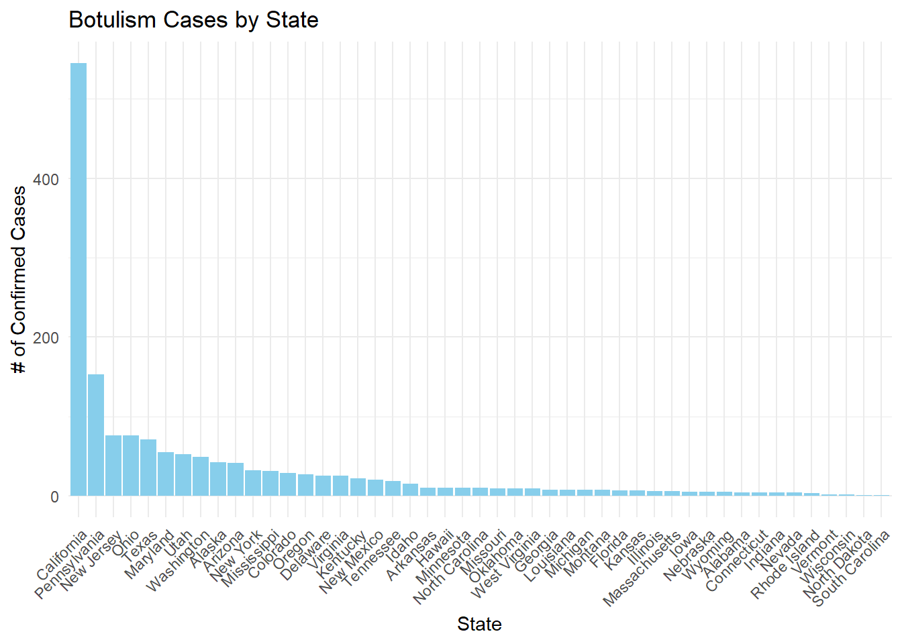

botulism = here::here("cdcdata-exercise","data","Botulism.csv") #setting path
bot = read.csv(botulism)Data Analysis Exercise
About the dataset
This dataset records the number of confirmed botulism cases per state each year, along with details on transmission and toxin types from 1899 to 2017. Botulism is a rare yet severe illness caused by toxins produced by Clostridium botulinum bacteria, leading to muscle weakness, paralysis, and potentially life-threatening breathing problems. Updates are provided annually by the Alaska Division of Public Health and California Department of Public Health.
The data was obtained from the CDC’s website and is available at this link: Botulism CDC.
Loading Data
Understading The Dataset
This dataset includes 2,280 observations and 5 variables, meeting the assignment’s requirements. Upon review, no outliers were found and I did find NA’s in the state variable which required processing. However, for this exercise, analysis will focus exclusively on the last ten years (2008-2017).
Data Structure
str(bot) #structure of data to understand what this dataset contains'data.frame': 2280 obs. of 5 variables:
$ State : chr "Alaska" "Alaska" "Alaska" "Alaska" ...
$ Year : int 1947 1948 1950 1952 1956 1959 1960 1967 1968 1970 ...
$ BotType : chr "Foodborne" "Foodborne" "Foodborne" "Foodborne" ...
$ ToxinType: chr "Unknown" "Unknown" "E" "E" ...
$ Count : int 3 4 5 1 5 10 2 1 1 1 ...Data Summary
summary(bot) #basic summary of data State Year BotType ToxinType
Length:2280 Min. :1899 Length:2280 Length:2280
Class :character 1st Qu.:1976 Class :character Class :character
Mode :character Median :1993 Mode :character Mode :character
Mean :1986
3rd Qu.:2006
Max. :2017
Count
Min. : 1.000
1st Qu.: 1.000
Median : 1.000
Mean : 3.199
3rd Qu.: 3.000
Max. :59.000 Processing Data
As mentioned earlier, I will focus on the dataset’s last 10 years. There were 16 missing values which were removed due to a missing state.
Filtering for 10 years
bot_10years = bot %>%
filter(Year %in% 2008:2017,
!is.na(State))New Data Structure
We now have 494 observations and 5 variables.
str(bot_10years)'data.frame': 494 obs. of 5 variables:
$ State : chr "Alaska" "Alaska" "Alaska" "Alaska" ...
$ Year : int 2008 2008 2009 2010 2010 2010 2011 2012 2013 2014 ...
$ BotType : chr "Foodborne" "Foodborne" "Infant" "Foodborne" ...
$ ToxinType: chr "E" "Unknown" "A" "B" ...
$ Count : int 6 2 1 2 2 1 5 3 1 7 ...New Data Summary
summary(bot_10years) State Year BotType ToxinType
Length:494 Min. :2008 Length:494 Length:494
Class :character 1st Qu.:2010 Class :character Class :character
Mode :character Median :2013 Mode :character Mode :character
Mean :2013
3rd Qu.:2015
Max. :2017
Count
Min. : 1.000
1st Qu.: 1.000
Median : 1.000
Mean : 3.178
3rd Qu.: 3.000
Max. :35.000 Grouping by Year
This code groups the data by year to visualize the total number of confirmed cases each year and determine which year had the highest occurrences of Botulism.
group_year = bot_10years %>%
group_by(Year) %>%
summarize(total_cases = sum(Count)) %>%
mutate(percentage_of_total = round((total_cases / sum(total_cases)) * 100, 2))
group_year# A tibble: 10 × 3
Year total_cases percentage_of_total
<int> <int> <dbl>
1 2008 150 9.55
2 2009 122 7.77
3 2010 111 7.07
4 2011 135 8.6
5 2012 155 9.87
6 2013 154 9.81
7 2014 158 10.1
8 2015 199 12.7
9 2016 205 13.1
10 2017 181 11.5 Grouping by State
Similarly to the previous code, we are grouping by state to determine which state had the highest occurrence of Botulism.
group_state = bot_10years %>%
group_by(State) %>%
filter(!is.na(State)) %>% #Removing NAs
summarize(total_cases = sum(Count)) %>% #adding all the counts of confirmed cases by state
arrange(desc(total_cases)) %>%
mutate(percentage_of_total = round((total_cases / sum(total_cases)) * 100, 2))
head(group_state) #getting top 6 states# A tibble: 6 × 3
State total_cases percentage_of_total
<chr> <int> <dbl>
1 California 545 34.7
2 Pennsylvania 153 9.75
3 New Jersey 76 4.84
4 Ohio 76 4.84
5 Texas 71 4.52
6 Maryland 55 3.5 Grouping by Botulism Transmission Type
Lastly, we want to identify the most common transmission type for this disease.
group_trans = bot_10years %>%
group_by(BotType) %>%
summarize(total_cases = sum(Count)) %>%
arrange(desc(total_cases)) %>%
mutate(percentage_of_total = round((total_cases / sum(total_cases)) * 100, 2))
group_trans# A tibble: 4 × 3
BotType total_cases percentage_of_total
<chr> <int> <dbl>
1 Infant 1183 75.4
2 Foodborne 185 11.8
3 Wound 174 11.1
4 Other 28 1.78Plotting Botulism
Botulism by Year
This line chart illustrates a rising trend in Botulism cases beginning from 2010, which marked the lowest point on the graph (113 cases). The peak occurred in 2016, with 206 confirmed cases. Next, we will examine the states with the highest impact in the following chart.
ggplot(group_year, aes(x = Year, y = total_cases)) +
geom_bar(stat = "identity", fill = "skyblue") +
labs(title = "Botulism Cases by Year", y = "# of Confirmed Cases") +
theme_minimal() +
scale_x_continuous(breaks = unique(group_year$Year))Botulism by State
California stands out as the state with the highest number of confirmed Botulism cases, totaling 545, which accounts for more than half (56%) of all cases. This highlights California’s significant impact on the overall number of confirmed cases.
ggplot(group_state, aes(reorder(x = State, desc(total_cases)), y = total_cases)) +
geom_col(fill = "skyblue") +
labs(title = "Botulism Cases by State", x = "State", y = "# of Confirmed Cases") +
theme_minimal() +
theme(axis.text.x = element_text(angle = 45, hjust = 1))
#scale_x_continuous(breaks = unique(group_year$Year))Botulism by Transmission Type
In the last 10 years, infants have accounted for the highest proportion of transmissions, comprising 76% of all cases.
ggplot(group_trans, aes(x = BotType, y = total_cases)) +
geom_bar(stat = "identity", fill = "skyblue") +
labs(title = "Botulism Cases by Transmission Type", y = "# of Confirmed Cases") +
theme_minimal() #scale_x_continuous(breaks = unique(group_year$Year))